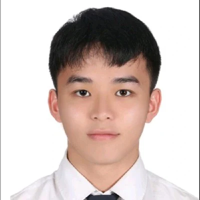
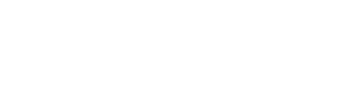

Quantitative microscopy
4D-STEM, electron ptychography, and orientation and strain mapping to resolve local material structure.
Materials Science & Data Analytics
William · Researcher in Singapore
I study how materials behave, from the structures we can image to the properties we can predict. My work brings together quantitative electron microscopy and data-driven materials research.

NTU SingaporeB.Eng. Materials Science and Engineering & Data Analytics · Double Major
Expected May 2027 · Dean's Distinction Award, AY2023/24
GPA 4.84 / 5.00
Research focus
4D-STEM, electron ptychography, and orientation and strain mapping to resolve local material structure.
Reproducible machine learning for composition screening and microstructure–property relationships.
Microstructure, mechanical response, and energy release in high-entropy alloy systems.
Incoming research intern at NIMS, Japan. Planned APT and TEM investigation of deuterium-induced nanoscale changes in refractory HEAs for hydrogen storage.
Final year project at NTU. Developing 4D-STEM orientation/strain mapping and PtyRAD ptychography workflows.
1st Place, URECA Poster Competition. College of Engineering, NTU; sole invited speaker.

Student chapter leadership · 2025–26